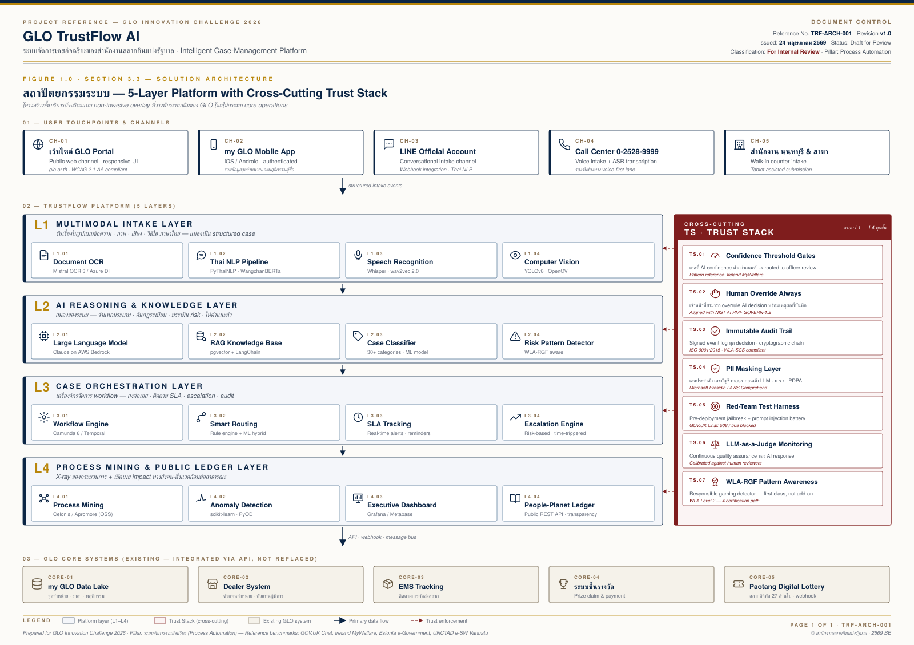
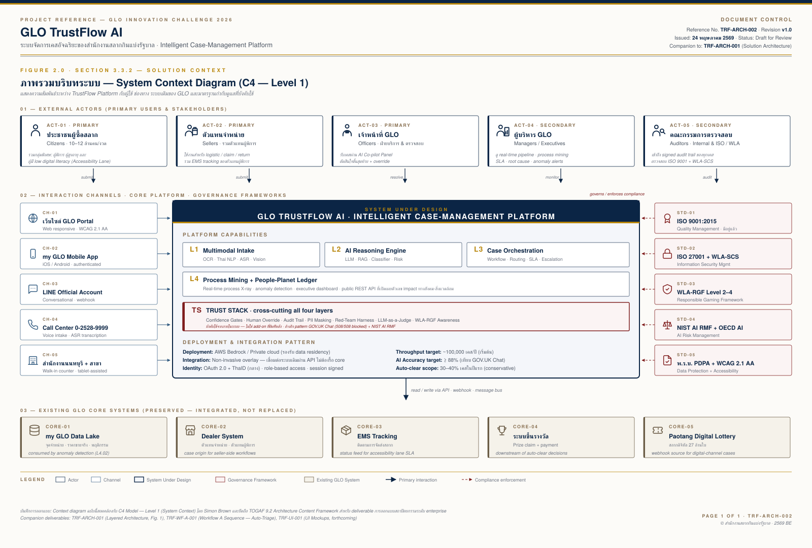

แพลตฟอร์มจัดการเคสอัจฉริยะของสำนักงานสลากกินแบ่งรัฐบาล — เปลี่ยนเรื่องร้องเรียน คำขอ และเอกสารกระจัดกระจาย ให้กลายเป็นเคสที่ตรวจสอบได้ จัดการอัตโนมัติ และโปร่งใสตั้งแต่บรรทัดแรก
GLO มีช่องทางดิจิทัลครอบคลุมแล้ว — my GLO, จองคิว, EMS, ระบบดีลเลอร์ — แต่กระบวนการ high-trust workflows ยังต้องเดินทาง กรอกซ้ำ และรอเจ้าหน้าที่ตรวจด้วยมือ TrustFlow คือชั้นบริการอัจฉริยะที่วางทับระบบเดิมโดยไม่รื้อ core system แปลงทุกเคสจากทุกช่องทางเป็น structured case ที่ตรวจสอบได้ จัดประเภทอัตโนมัติ และติดตามได้โปร่งใส
ขณะที่ "ปลายทาง" เป็นดิจิทัลแล้ว กระบวนการที่เชื่อมประชาชน → เจ้าหน้าที่ → ผู้บริหาร ยังกระจัดกระจาย ตรวจสลากชำรุดต้องมายื่นที่นนทบุรีก่อน 14:00 น. อายัดสลากต้องก่อนวันออกรางวัล ร้องเรียนกระจายหลายช่องทาง
Multimodal Intake · AI Triage & Routing · Accessibility-First Lane · Process Mining Live Twin · Trust Stack ที่ครอบทุกชั้น — non-invasive overlay ที่ไม่กระทบ core system ของ GLO
ลดเวลาเดินทาง · ลดเคสวนกลับ · accessibility สำหรับผู้พิการ · ลดต้นทุน 30-40% · เพิ่มความเร็ว 50-70% · audit trail ครบทุก decision · เสริมจุดยืน WLA Level 2-4
GLO ดำเนินงานในสองมิติพร้อมกัน — เป็นทั้งหน่วยงานบริการสาธารณะที่ให้บริการประชาชนนับสิบล้านคนต่องวด และเป็น national lottery operator ที่ต้องปฏิบัติตามมาตรฐานสากล WLA-SCS และ WLA-RGF ระบบดิจิทัลที่ลงทุนไปแล้วยังไม่ถูกแปลงเป็นประสบการณ์ที่ดีของประชาชนเต็มที่
ประชาชนต้องค้นหาช่องทางที่ถูกต้องด้วยตนเอง สลากชำรุดอีกช่องทาง การร้องเรียนราคาเกินอีกช่องทาง ปัญหาตัวแทนผู้พิการอีกช่องทาง เจ้าหน้าที่ต้อง "ต่อจิ๊กซอ" จากหลายแหล่ง และผู้ใช้รู้สึก "ถูกโยน" ระหว่างหน่วยงานย่อย
การตรวจสอบสลากชำรุด การอายัดสลากหาย การขึ้นรางวัล ยังต้องเดินทางมายื่นที่สำนักงานนนทบุรีในเวลาราชการ ทำให้ผู้ที่อยู่ต่างจังหวัด ผู้สูงอายุ และผู้พิการเสียเปรียบในการเข้าถึงสิทธิที่ตนเองมี
การคัดกรองเอกสาร จัดประเภทเคส จ่ายงาน ติดตามสถานะ และตอบคำถามซ้ำ ๆ กินเวลาเจ้าหน้าที่ที่ควรได้ใช้กับงานที่ต้องใช้วิจารณญาณ — งานวิจัยภาครัฐทั่วโลกพบว่า AI case management ลด case backlog ได้ 50% และลดภาระงานบริหาร 30%
แอป my GLO เก็บราคาขายจริง พิกัดจุดจำหน่าย พฤติกรรมผู้ซื้อไว้แล้ว แต่ข้อมูลยังไม่ถูกแปลงเป็น actionable insight — "ใครขายเกินราคา ที่ไหน เมื่อไหร่ เคสร้องเรียนประเภทไหนเพิ่มขึ้น ทีมไหน SLA ตก" ยังต้องรอรายงานรายเดือนแทนที่จะเห็นทันที
GLO TrustFlow AI คือแพลตฟอร์มจัดการเคสอัจฉริยะแบบ end-to-end ที่ทำหน้าที่เป็น "ชั้นบริการ" (service layer) วางทับระบบเดิมของ GLO โดยไม่ต้องรื้อ core system ต่างจาก chatbot ทั่วไปที่ตอบคำถามได้แต่ไม่จัดการเคสจริง — TrustFlow ทำงานครบวงจรตั้งแต่ผู้ใช้กดส่งเรื่องครั้งแรก จนถึงการปิดเคสและรายงานผลในระดับองค์กร
เข้าผ่านช่องทางใดก็ได้ — เว็บ GLO, my GLO, LINE OA, call center — ระบบทักทายและสอบถามด้วยภาษาไทยธรรมชาติ รับข้อมูล multimodal (ภาพ/เสียง/พิมพ์) ตรวจความสมบูรณ์ทันที ออกเลขเคสและ ETA อัปเดต status real-time
เห็นเคสที่จัดลำดับความสำคัญแล้ว พร้อม AI Co-pilot Panel ที่แสดง: ข้อมูลสกัดจากเอกสาร · confidence score ของ AI · คำแนะนำขั้นถัดไป · ปุ่ม "เห็นด้วย / แก้ไข / Escalate" ที่ทุกการกดถูกบันทึก audit log
Dashboard pipeline สดของทุกเคส · Process Mining View ที่โชว์เส้นทางจริง vs ที่ออกแบบไว้ · Anomaly Alerts สำหรับเคสผิดปกติ · People-Planet Ledger ที่เปิดเผยต่อสาธารณะ — กระดาษประหยัด, CO₂ ลด, เวลาคืน
TrustFlow ประกอบด้วย 4 layer หลักที่เรียงตามลำดับการประมวลผลของเคส และ Trust Stack ที่เป็น cross-cutting concern ครอบทุกชั้น — ออกแบบแบบ non-invasive overlay ให้เชื่อมต่อกับระบบเดิมของ GLO ผ่าน API contract มาตรฐาน

Context diagram ตามมาตรฐาน C4 Model Level 1 แสดงความสัมพันธ์ของ TrustFlow Platform กับ external actors (ประชาชน · ตัวแทน · เจ้าหน้าที่ · ผู้บริหาร · auditor) · interaction channels · governance frameworks ที่บังคับใช้ · และ existing GLO core systems ที่เชื่อมต่อด้วย API

Sequence diagrams สำหรับ workflow หลักของ TrustFlow — แสดงการประสานงานของ component ต่าง ๆ ในแต่ละ scenario ตั้งแต่ user action จนถึง output การจัดการ confidence gate, human override, audit trail, และ public ledger update
sequenceDiagram
autonumber
actor Citizen as ประชาชน
participant CH as Channel
(my GLO / LINE)
participant L1 as L1 Multimodal Intake
participant L2 as L2 AI Reasoning
participant TS as TS Trust Stack
participant L3 as L3 Orchestration
actor Officer as เจ้าหน้าที่ GLO
participant L4 as L4 Public Ledger
Citizen->>CH: ส่งภาพสลากชำรุด + เหตุผล
CH->>L1: forward multimodal input
L1->>L1: OCR สกัดเลขเซต/งวด
Vision ตรวจความสมบูรณ์
alt ภาพไม่สมบูรณ์
L1-->>Citizen: ขอภาพมุมที่ขาดเพิ่ม
Citizen->>CH: ส่งภาพชุดใหม่
end
L1->>L2: structured payload
L2->>L2: classify case + RAG retrieve
compute confidence score
L2->>TS: confidence gate check
alt Confidence ≥ 0.90 + Risk Low
TS-->>L3: auto-approve
L3-->>Citizen: แจ้งผล + เลขเคส + ETA
L3->>L4: log impact metrics
else Confidence < 0.90 หรือ Risk Mid+
TS-->>L3: route to officer
L3->>Officer: queue + AI Co-pilot Panel
Officer->>Officer: review + decide
Officer->>TS: log decision + reason
TS->>L3: signed audit trail
L3-->>Citizen: แจ้งผล + เลขเคส
L3->>L4: log impact + accessibility
end
Note over L4: Public REST API publishes real-time:
CO₂ saved · time returned · accessibility cases
sequenceDiagram
autonumber
actor Admin as Admin (GLO)
participant API
participant Loader
participant Embedder
participant DB as PostgreSQL+pgvector
Admin->>API: POST /v1/documents/text or upload
(ระเบียบ · FAQ · past cases)
API->>Loader: extract text
Loader-->>API: raw text
API->>API: normalize + chunk + overlap
(Thai-aware tokenization)
API->>Embedder: embed chunks
Embedder-->>API: vectors (1536-dim)
API->>DB: save document + chunks + vectors
DB-->>API: indexed ids
API-->>Admin: ingest summary + chunk count
sequenceDiagram
autonumber
actor User as ประชาชน
participant API
participant Redis
participant DB as PostgreSQL+pgvector
participant LLM as Claude / vLLM
User->>API: POST /v1/chat + X-Tenant-ID
API->>Redis: rate limit
API->>DB: get/create tenant + conversation
par async
API->>Redis: response cache lookup
API->>API: embed user question
end
API->>DB: vector search top-k chunks
API->>API: build Thai RAG prompt
(with PII masking applied)
API->>LLM: async chat/completions
LLM-->>API: answer + citations
API->>DB: save messages + inference trace
API->>Redis: cache answer (TTL 24h)
API-->>User: answer + sources
sequenceDiagram
autonumber
actor Officer as เจ้าหน้าที่ GLO
participant UI as AI Co-pilot Panel
participant L2 as L2 AI Reasoning
participant TS as TS Trust Stack
participant L3 as L3 Orchestration
participant Audit as Audit Log Service
participant Manager as ผู้บริหาร / Auditor
Officer->>UI: เปิดเคส #C-2569-00845
UI->>L2: fetch AI recommendation
L2-->>UI: recommendation + confidence 0.72
UI->>Officer: แสดง extracted data + AI suggestion
alt เห็นด้วยกับ AI
Officer->>UI: คลิก "เห็นด้วย"
UI->>TS: confirm decision (concur)
else ไม่เห็นด้วย → Override
Officer->>UI: คลิก "Override"
UI->>Officer: บังคับใส่เหตุผล (ห้ามว่าง)
Officer->>UI: ระบุเหตุผล + ทางเลือกอื่น
UI->>TS: override decision + justification
end
TS->>TS: sign event with HSM key
append to immutable chain
TS->>Audit: signed event log entry
Audit-->>Manager: real-time audit feed
TS->>L3: update case state
L3-->>Officer: action confirmed
sequenceDiagram
autonumber
participant MyGLO as my GLO Data Lake
participant L4a as L4.01 Process Mining
participant L4b as L4.02 Anomaly Detection
participant L4c as L4.03 Dashboard
actor Manager as ผู้บริหาร GLO
loop ทุก 5 นาที
MyGLO->>L4a: stream new events
L4a->>L4a: update process model
L4a->>L4b: forward event window
L4b->>L4b: time-series + clustering
(scikit-learn / PyOD)
alt Anomaly score > threshold
L4b->>L4c: emit alert
{type, severity, context}
L4c-->>Manager: push notification + dashboard badge
Manager->>L4c: เปิด anomaly detail
L4c-->>Manager: root cause trace + linked cases
else Normal
L4b->>L4c: update baseline metrics
end
end
Note over L4c: ทุก alert ถูก log สำหรับ
compliance review ของ auditor
Trust Stack ไม่ใช่ "ฟีเจอร์ความปลอดภัย" ที่เติมในขั้นตอน production แต่เป็น layer แนวตั้งที่ปรากฏในผังสถาปัตยกรรมตั้งแต่บรรทัดแรกของโค้ด — สอดคล้องกับแนวทาง GOV.UK Chat ที่ใช้ LLM-as-a-judge + manual evaluation + red teaming ร่วมกับ AI Security Institute (AISI) และ NIST AI Risk Management Framework
เคสที่ AI confidence ต่ำกว่าเกณฑ์ที่ตั้งไว้ ถูก routed ไปให้เจ้าหน้าที่ทันที — calibrated probability ไม่ใช่แค่ softmax
เจ้าหน้าที่สามารถ overrule AI decision ได้ทุกเคส พร้อมเหตุผลที่ถูกบังคับให้ระบุ และถูกบันทึก audit log อย่างสมบูรณ์
ทุก event ถูก sign ดิจิทัลด้วย HSM key และต่อเป็น cryptographic chain — สามารถพิสูจน์ได้ว่าไม่มีการแก้ไขย้อนหลัง
เลขประจำตัวประชาชน เลขบัญชี ที่อยู่ ถูก mask ก่อนเข้า LLM ใช้ token-based replacement ที่ reversible ใน secure context
Pre-deployment battery สำหรับ jailbreak + prompt injection + adversarial input — รัน automated ทุก deploy
Continuous quality assurance — สุ่ม sample AI response แล้วใช้ second LLM ประเมินคุณภาพเทียบกับ rubric ที่ calibrated กับ human reviewer
ระบบรู้จัก pattern ที่อาจเข้าข่ายความรับผิดชอบของ lottery operator (self-exclusion, vulnerable user signals, problem gambling indicators) เป็น first-class component ของสถาปัตยกรรม ไม่ใช่ add-on ที่เติมทีหลัง — สถิติของ WLA ปี 2025 ระบุว่า lottery operator ที่ certify WLA-RGF Level 2-4 ขยับจาก 65% (2022) เป็น 84% (2025) สัญญาณว่า operator ที่ไม่ขยับด้านความรับผิดชอบจะกลายเป็นกลุ่มน้อยในไม่ช้า
เทคโนโลยี LLM, OCR, process mining, workflow engine มีคนใช้แล้วทั่วโลก — สิ่งที่ทำให้ TrustFlow ล้ำหน้าคือ "วิธีประกอบเข้าด้วยกันในบริบทเฉพาะของ national lottery ที่ Trust สำคัญที่สุด"
ฝัง WLA-RGF risk pattern detector เป็น first-class component ในทุก layer — Salesforce Gov Cloud, Microsoft Power Platform, ServiceNow ไม่ทำ เพราะออกแบบเป็น horizontal product
Voice-first ภาษาไทย, audio status update, proxy submitter สำหรับผู้ดูแล — เป็น "ช่องทางเทียบเท่า" ไม่ใช่ "feature เสริม" รองรับผู้พิการ ผู้สูงอายุ low digital literacy
X-ray เส้นทางจริงของเคส — Accenture ค้นพบ 14,000 path ของ requisition ใน SAP Ariba ผ่านวิธีนี้ GLO จะเห็นได้ว่า "เคสตั๋วเสีย" จริง ๆ เดินกี่ทาง
Publish impact metrics เป็น real-time public dashboard ต่อยอดแนวคิดจาก Allwyn report "Future of Lottery: A Game for Change" สำหรับ operational sustainability
เคสง่ายอนุมัติอัตโนมัติเมื่อ confidence สูง risk ต่ำ เคสยากส่ง officer พร้อม AI assist — Ireland MyWelfare ทำได้ 83% (illness) และ 98% (treatment)
Thai NLP + Thai OCR + Thai voice เป็นแกนการออกแบบ ไม่ใช่ระบบอังกฤษที่แปลไทย — เหมือนที่ Thailand Post พิสูจน์ใน CPTA Digital Post (Tech for Gov 2025)
Confidence threshold, human override, signed audit trail, PII masking, red-team test เป็น layer แนวตั้งที่เห็นในสถาปัตยกรรมตั้งแต่หน้าแรก ไม่ใช่ "ติดความปลอดภัยตอนเดือนสุดท้าย" — สอดคล้องกับแนวทาง GOV.UK Chat ที่ใช้ LLM-as-a-judge + red teaming ร่วมกับ AI Security Institute และ NIST AI Risk Management Framework
| มิติเปรียบเทียบ | Chatbot รัฐทั่วไป | IDP / Document AI | Salesforce Gov Cloud | GLO TrustFlow AI |
|---|---|---|---|---|
| Multimodal Intake (ภาพ/เสียง/วิดีโอ) | เฉพาะ chat | เน้นเอกสาร | ต้อง add-on | ครบ |
| End-to-end Case Lifecycle | — | — | มี | มี |
| Process Mining ในระบบ | — | — | ต้อง partner | in-box |
| WLA-RGF Risk Awareness | — | — | — | first-class |
| Thai-First (NLP/OCR/Voice) | retrofitted | retrofitted | retrofitted | purpose-built |
| Accessibility-First Lane | — | — | optional | equal channel |
| Public-Facing Impact Ledger | — | — | — | open API |
| Trust Stack เห็นในสถาปัตยกรรม | implicit | implicit | implicit | visible layer |
| Auto-Clear with Measured Autonomy | — | thresholds | rule-based | confidence + risk hybrid |
เลือก stack ที่ industry-standard และ proven in production แทน proprietary stack ที่ผูกขาด — ทุก component มี fallback / alternative provider เพื่อลดความเสี่ยง vendor lock-in
| Layer | Component | Technology Options | Licensing | Rationale |
|---|---|---|---|---|
| L1.01 | OCR | Mistral OCR 3, Azure Document Intelligence, Tesseract | Commercial / Hybrid | 99.2% accuracy ในปี 2026, รองรับเอกสารราชการไทย |
| L1.02 | Thai NLP | PyThaiNLP, WangchanBERTa, Hugging Face Thai models | Open Source | Thai-native tokenization และ NER |
| L1.03 | ASR | OpenAI Whisper, wav2vec 2.0, Azure Speech | Open Source / Commercial | รองรับ Thai voice และภาษาถิ่น |
| L1.04 | Computer Vision | YOLOv8, OpenCV, custom CNN | Open Source | ตรวจสอบความถูกต้องของภาพสลาก |
| L2.01 | LLM | Claude (Anthropic API / AWS Bedrock), Llama 3, Mistral | Commercial / Open | GOV.UK Chat ใช้ Claude pattern เดียวกัน 90% accuracy |
| L2.02 | Vector Database | pgvector, Pinecone, Weaviate, Qdrant | Open Source / Commercial | pgvector ใช้ PostgreSQL ที่ทีม IT คุ้นเคยแล้ว |
| L2.02 | RAG Framework | LangChain, LlamaIndex | Open Source | Industry standard มี ecosystem ใหญ่ |
| L3.01 | Workflow Engine | Camunda 8, Temporal, Apache Airflow | Open Source | Battle-tested in enterprise workflow orchestration |
| L4.01 | Process Mining | ProM, Apromore, Celonis | Open Source / Commercial | Accenture-validated สำหรับ enterprise scale |
| L4.02 | Anomaly Detection | scikit-learn, PyOD, custom models | Open Source | Time-series + clustering บนข้อมูล my GLO |
| L4.03 | Dashboard | Grafana, Metabase, Power BI | Open Source / Commercial | Self-service analytics สำหรับผู้บริหาร |
| TS.03 | Audit Signing | HashiCorp Vault, AWS KMS, custom HSM | Open Source / Commercial | Cryptographic signing ที่ผ่าน ISO 27001 audit |
| TS.04 | PII Detection | Microsoft Presidio, AWS Comprehend | Open Source / Commercial | PDPA-compliant masking ก่อนเข้า LLM |
| TS.05 | Red-Team Tools | Garak, PyRIT, custom prompt battery | Open Source | Automated jailbreak + injection testing |
ใช้แนวทาง "Demo-First, Trust-First" — ทุกบรรทัดของโค้ดถามตัวเองว่า "สไลด์เดโม่จะใช้สิ่งนี้ไหม" และ "ผ่าน Trust Stack หรือยัง" เพื่อหลีกเลี่ยงปัญหาที่ MIT NANDA State of AI in Business 2025 ระบุว่ามีเพียง ~5% ของ enterprise GenAI pilots ที่สร้าง impact วัดได้ระดับ operational
สัมภาษณ์ผู้มีส่วนได้ส่วนเสีย 10-15 คน (เจ้าหน้าที่บริการ ตัวแทนจำหน่าย ผู้ซื้อ ผู้พิการ) + รวบรวมเอกสารตัวอย่างจริง (รูปสลากชำรุด ฟอร์มร้องเรียน บันทึก call center) เพื่อใช้เทรน OCR และ classification ทำ workflow mapping ของ Workflow A & B
ออกแบบสถาปัตยกรรมตาม 5 layers · เลือก concrete tech stack (Claude API, OCR provider, vector DB, workflow engine) · ออกแบบ wireframe สำหรับ 3 หน้าจอ (user/staff/manager) · ตั้ง schema ของ event log สำหรับ audit trail · กำหนด contract ของ People-Planet Ledger API
Multimodal intake → AI triage → case orchestration ใช้ open-source workflow engine (Camunda / Temporal) และ Claude + RAG สำหรับ AI brain — พัฒนาแบบ vertical slice (Workflow A ครบทั้ง pipeline ก่อน) แล้วค่อยขยายไป Workflow B เพื่อลดความเสี่ยง
สร้าง manager dashboard ที่แสดง pipeline สด, SLA, anomaly และ People-Planet Ledger สำหรับ data ใช้แบบผสม (live จาก prototype + synthetic ที่ใกล้เคียง production load) เพื่อให้เห็นภาพ "ระบบเดินที่ scale จริง"
เพิ่ม confidence threshold, human override UI, PII masking, signed audit trail · Red-team test (jailbreak / prompt injection) ตาม pattern GOV.UK Chat (508/508 blocked) · LLM-as-a-judge เพื่อวัด accuracy baseline · Accessibility audit (WCAG 2.1 AA)
ทดสอบกับผู้ใช้จริง 5-10 คน (proxy users สำหรับ workflow ที่อ่อนไหว) · เก็บ feedback แล้ว iterate · ทำสคริปต์เดโม่ + อัด backup demo video · ทำ pitch deck ฉบับสุดท้าย · เตรียม Q&A สำหรับกรรมการ
ทุกตัวเลขมี proof-of-concept จาก deployment ของรัฐบาลชั้นนำของโลกรองรับ ทำให้ผลลัพธ์เหล่านี้ไม่ใช่ "เคลม" แต่เป็น "เป้าหมายที่มีหลักฐานสนับสนุน"
TrustFlow ออกแบบให้สอดคล้องกับมาตรฐานสากลและกฎหมายไทยตั้งแต่บรรทัดแรก ไม่ใช่ retrofit ภายหลัง
| มาตรฐาน | ขอบเขต | การบังคับใช้ใน TrustFlow |
|---|---|---|
| ISO 9001:2015 | Quality Management System | GLO มีอยู่แล้วในกระบวนการพิมพ์ การจ่ายรางวัล การออกรางวัล — TrustFlow audit trail ขยายขอบเขตให้ครอบคลุมเคสจัดการประจำวัน |
| ISO 27001 | Information Security Management | Role-based access control · encryption at rest & in transit · key management ผ่าน HSM |
| ISO 14001 | Environmental Management | GLO มีอยู่แล้ว — People-Planet Ledger สนับสนุน ESG reporting |
| WLA-SCS | Security Control Standard (World Lottery Association) | Audit trail + access control + change management ผ่าน Trust Stack TS.02 + TS.03 |
| WLA-RGF Level 2-4 | Responsible Gaming Framework | TS.07 WLA-RGF Pattern Detector เป็น first-class — รู้จัก self-exclusion, vulnerable user signals, problem gambling indicators |
| NIST AI RMF 1.0 | AI Risk Management Framework | GOVERN-1.2 (human oversight) ผ่าน TS.02 · MEASURE-2.5 (red teaming) ผ่าน TS.05 · MANAGE-2 (incident response) ใน Trust Stack |
| OECD AI Principles | Trustworthy AI | Transparency, accountability, robustness ผ่าน Trust Stack ทั้ง 7 องค์ประกอบ |
| WCAG 2.1 AA | Web Content Accessibility Guidelines | Accessibility-First Lane สำหรับผู้พิการ + audit ของ user-facing UI ทุก release |
| พ.ร.บ. PDPA | การคุ้มครองข้อมูลส่วนบุคคล | TS.04 PII Masking Layer · ตัวเลือก deploy LLM แบบ on-premise หาก GLO กำหนดให้ข้อมูลห้ามออกนอกราชอาณาจักร |
TrustFlow ไม่ใช่ "นวัตกรรมในห้องวิจัย" — เป็นการประกอบเทคโนโลยีที่มีคนใช้งานจริงระดับ production ทั่วโลก
ชนะ Efficiency Category ของ Tech for Gov 2025 — AI ช่วยคัดกรองเอกสารส่งประกวด
ได้รางวัล Experience Category Tech for Gov 2025 — AI Document Intelligence สำหรับเอกสารไทย
Grand Prize Winner ของ Tech for Gov 2025
ได้รางวัล AWS Public Sector Day 2025
ใช้ Claude บน AWS Bedrock — 90% accuracy · 88% answer rate · block jailbreak 508/508 · ผู้ใช้ 73% บอกว่ามีประโยชน์ · 64% พอใจ
Auto-approve illness benefit 83% · treatment benefit 98% — pattern หลักของ TrustFlow Auto-Clear
99% บริการรัฐเป็นดิจิทัล — ประชาชนประหยัดเวลารวม 800 ปี/ปี · บริการรัฐระดับ digital-first
Paperless trade — ลด 2 procedures = ลด CO₂ 5,827 กิโลกรัม · proof-point สำหรับ People-Planet Ledger